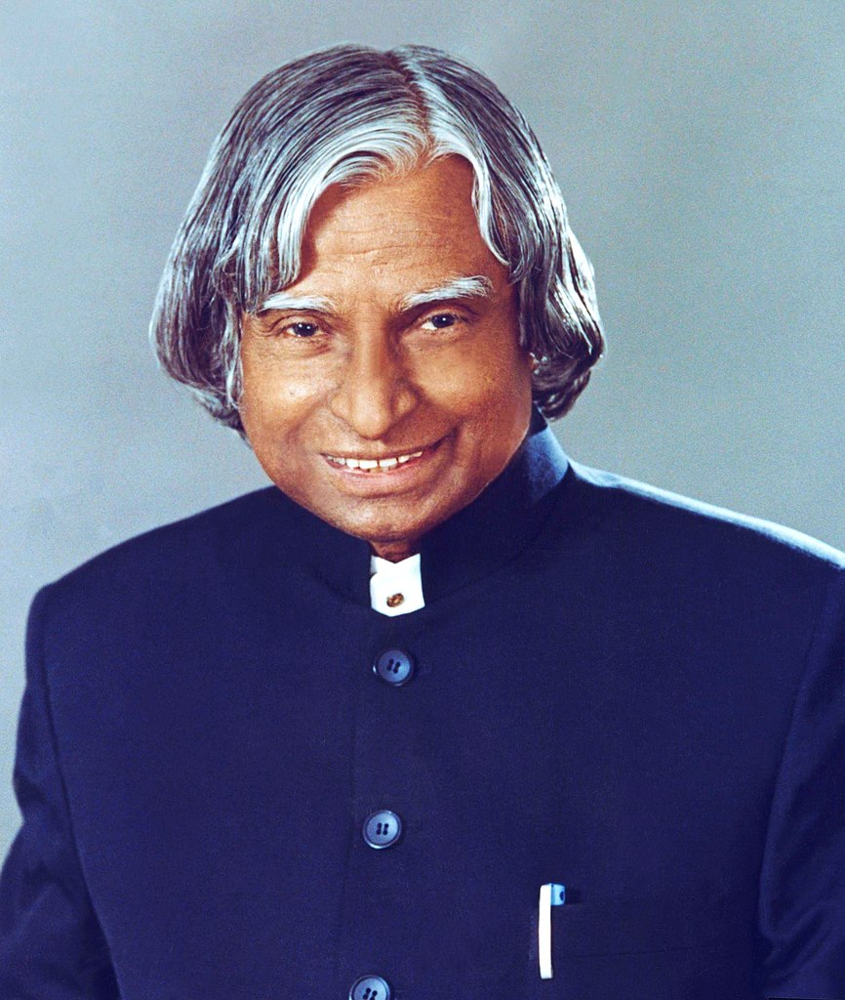

Dr. APJ Abdul Kalam

The People's President
Early Life:
- Birth: October 15, 1931, in Rameswaram, Tamil Nadu, India.
- Family Background: Came from a humble background; father was a boat owner, and mother was a
housewife.
Education:
- Schooling: Ramanathapuram Schwartz Matriculation School.
- College: St. Joseph's College, Tiruchirappalli.
- Specialization: Aerospace Engineering from Madras Institute of Technology.
Career Highlights:
- ISRO: Project Director of India's first satellite launch vehicle (SLV-III).
- DRDO: Developed ballistic missile and launch vehicle technology.
- Pokhran-II: Played a key role in India's nuclear tests in 1998.
Presidency:
- Term: 11th President of India (2002-2007)
- Nicknamed: The People's President for his accessibility and simplicity.
Achievements:
- Awards: Bharat Ratna, Padma Vibhushan, Padma Bhushan.
- Books: Authored numerous inspirational books including "Wings of Fire," "Ignited Minds," and
"India 2020."
- Vision: Advocated for a self-reliant and developed India by 2020.
Legacy:
- Youth Inspiration: Inspired millions of young Indians to dream big and work hard.
- Death: Passed away on July 27, 2015, while delivering a lecture at IIM Shillong.
Quotes:
- "Dream, dream, dream. Dreams transform into thoughts and thoughts result in action."
- "If you want to shine like a sun, first burn like a sun."